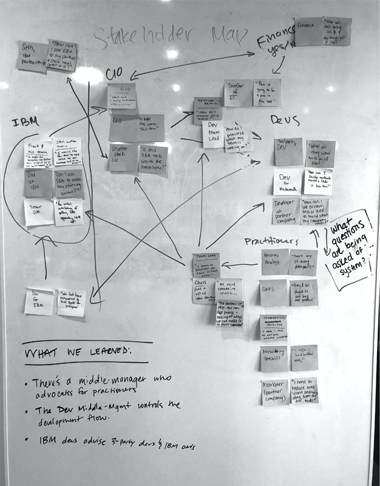
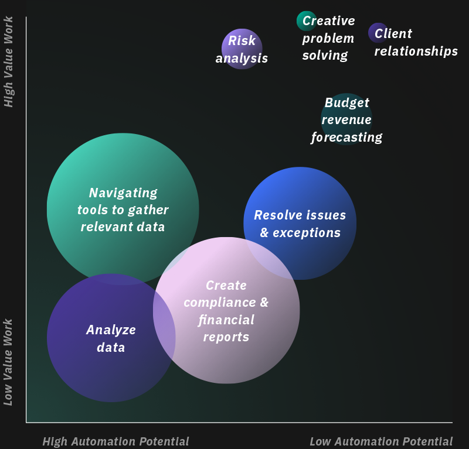
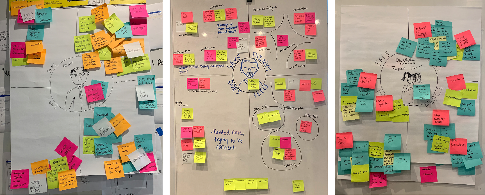
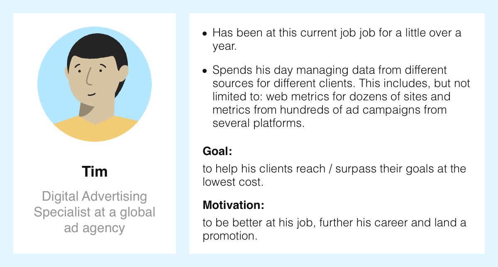
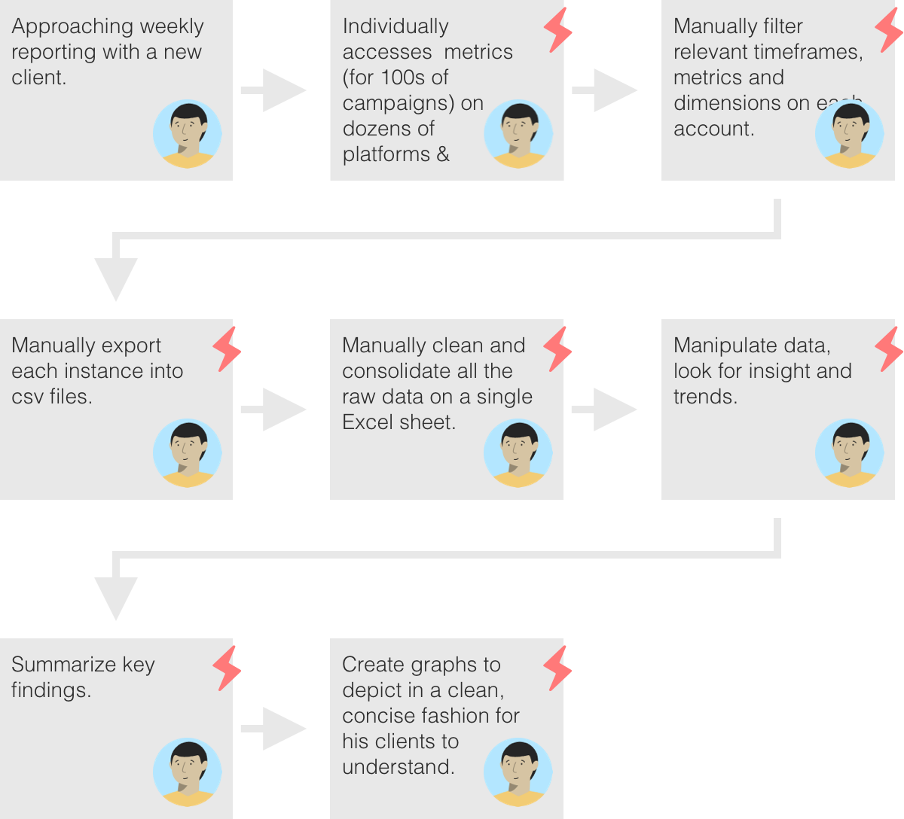
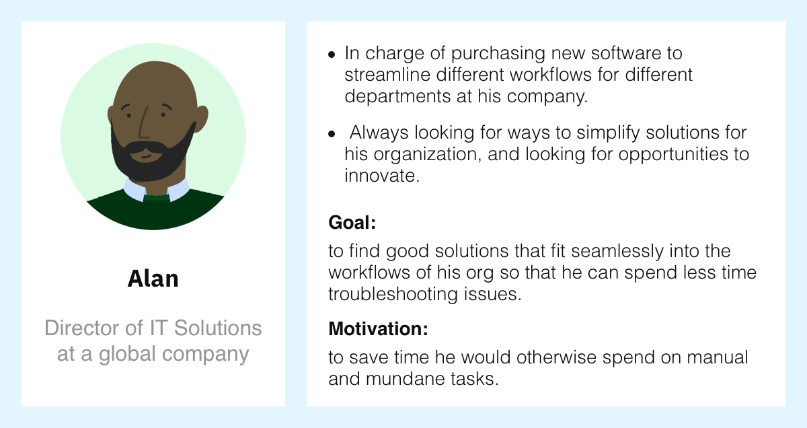
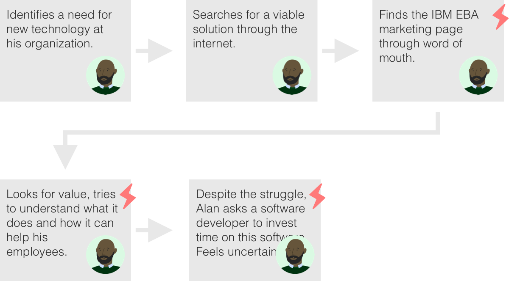
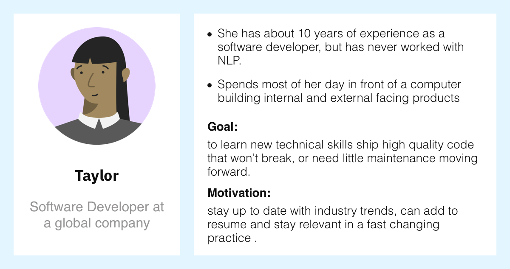
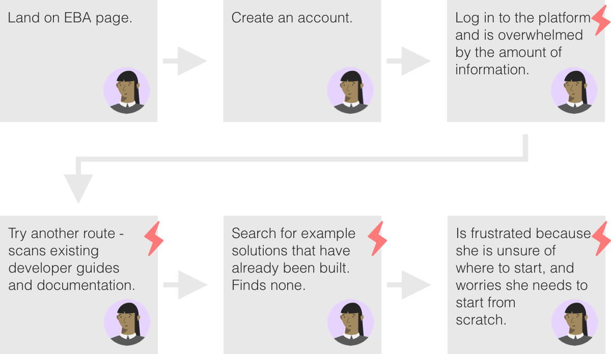
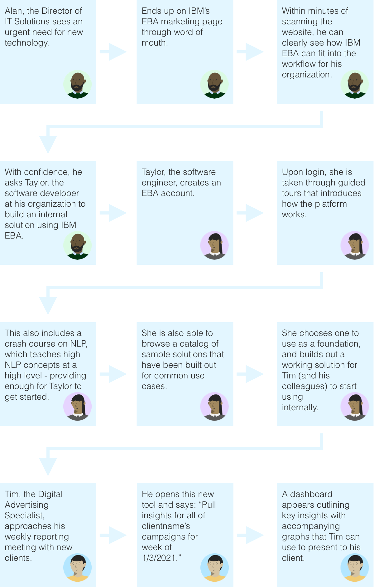

Domain Knowledge
back to table of contentsStakeholder map
To start, we spoke with EBA engineers and product managers to understand the product space. To add clarity to our conversations with the product team, we mapped out key players' relationships to one another in a stakeholder map.

Work allocation
Through desk research we were also able to validate a strong need for this product. Employees who rely on data spend a disproportionate amount of time on menial tasks.

Key Terms
Natural Language Processing (NLP): The ability of a computer program to understand human language as it is spoken.
AI Assistants: An application program that learns and adapts based on a user's actions and environmental variations.
User Research
back to table of contentsInterviewed:
7
Software developers
2
Decision makers
2
End users
Key findings
Only 1/7th of the software developers we interviewed had experience with NLP.
Software developers heavily rely on documentation and examples.
Decision makers liaise with data reliant employees and developers to create solutions that streamline their business. They typically need to evaluate dozens of tools to find solutions that fit into their workflow.
Existing issues with EBA
Software developers expressed their frustration with the EBA platform:
"We had to work pretty closely with the [original EBA] development team… just to understand how we were expected to program with the library provided."
--
"We had to code a pattern… for every possible dimension and metric… we obviously weren’t going to do that for hundreds of metrics and dimensions manually."
We also learned from decision makers that our marketing pages were lacking:
"Well, I don’t know what it [EBA] does..."
User Personas & Flows
It became clear that there were 3 users we needed to account for in our design.
Empathy maps have us write out in detail what our users say, think, do and feel.
User 1: The "End User"
 
User 2: The "Decision Maker"
 
User 3: The Software Developer
 
Align on the Problem(s)
back to table of contentsProblem Statements and Project Hills
To align as a team and focus our efforts, we wrote problem statements and Hills. Hills are used at IBM to turn users’ needs into project goals, helping our team align around a common understanding of the intended outcomes to achieve.
Problem Statement and Hill 1
Problem Statement
It was difficult for decision makers to understand what EBA can do.
Hill
A decision maker can discover EBA, recognize how it will improve efficiency of his/her practitioners, and within minutes, want to integrate it into their ecosystem.
Problem Statement and Hill 2
Problem Statement
Most organizations don’t readily have NLP engineers at their disposal, and NLP is generally difficult for engineers to learn.
Hill
Any developer can discover and build natural language AI assistants for their business without possessing any prior knowledge of NLP.
Problem Statement and Hill 3
Problem Statement
Long ramp-up time as engineers are typically required o build solutions from scratch.
Hill
Any developer can learn to build and deploy an AI assistant in half the ramp-up time and without having to contact IBM support for assistance.
Design
back to table of contentsWith our problem statements and hills clearly highlighted, it was finally time to start designing a solution.
"Big Ideas" -- an ideation exercise used at IBM.
Plotting our Big Ideas on a Prioritization Matrix.
"To-Be" flow
Final Solution
back to table of contents